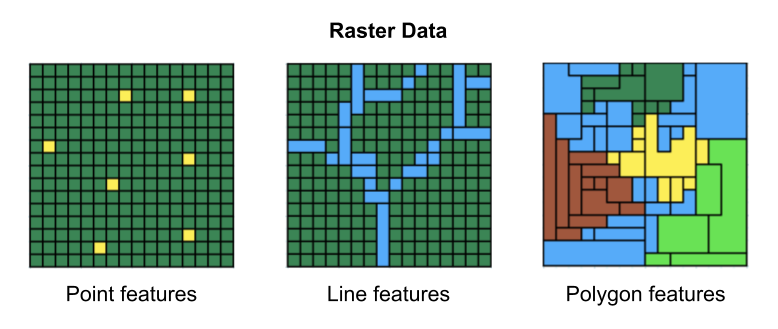
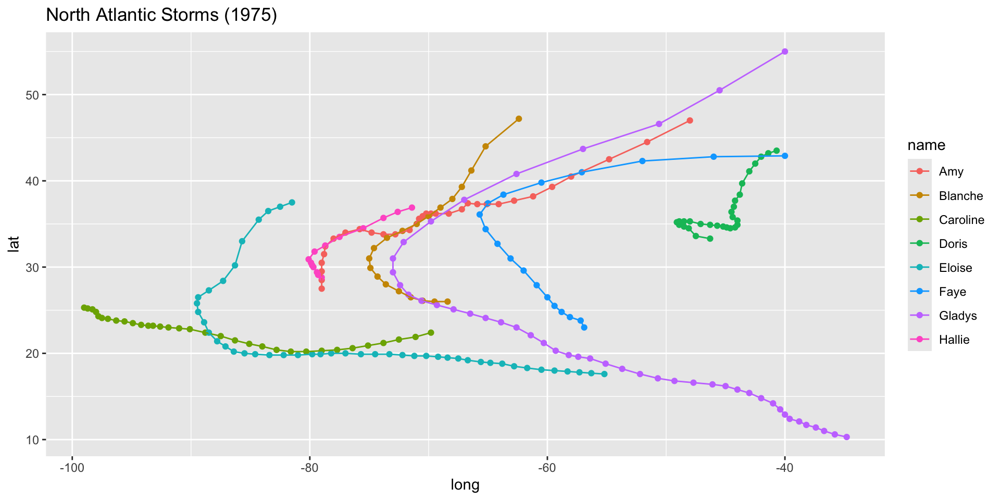

00:20
Storms in North Atlantic I
Maps part II
Two fundamental spatial data models

Two fundamental spatial data models
Vector Data

Raster Data

Vector Data
- Each row represents one geospatial feature:
- a single fire
- Attributes describe the features (fields or columns):
- name of fire
- date of fire alarm
- area burned
- Each feature has an associated geometry:
- polygon
Raster Data
- Geographic area represented as a grid.
- Grid has dimension: fixed number of rows and columns.
- A location is represented by a grid cell.
- Each cell has a value that represents the attribute of interest: emissions.
- Each cell is color-coded based on attribute value.
Vector Data
Vector data are better for discretely bounded data, e.g. bike racks, rivers, political boundaries, etc.

Raster Data
Raster data are better for continuous data, e.g. temperature, elevation, rainfall, etc.

Vector or Raster?

00:20
What about a map of North America?

What vector geometries are in this map?
01:30
What about a map of North America?

We have 2 kinds of geometries:
- Country geometries (polygons)
- Storm geometries (points and lines)
Let’s see how this map is made.
Another World Map from "rnaturalearth"

So far …
Map of World

- Data:
"sf"objectworld2 - Geom layer:
geom_sf() - No explicit
aes()
Scatter plot of storm tracks

- Data: tibble
storms75 - Geom layer:
geom_point() x=long, y=lat, color=name
Customize theme and labels
ggplot() +
geom_sf(data = world2) +
coord_sf(xlim = c(-110, -30), ylim = c(5, 65)) +
geom_point(data = storms75,
aes(x = long, y = lat, color = name)) +
geom_path(data = storms75,
aes(x = long, y = lat, color = name)) +
theme(panel.background = element_blank()) +
labs(title = "North Atlantic Storms (1975)")